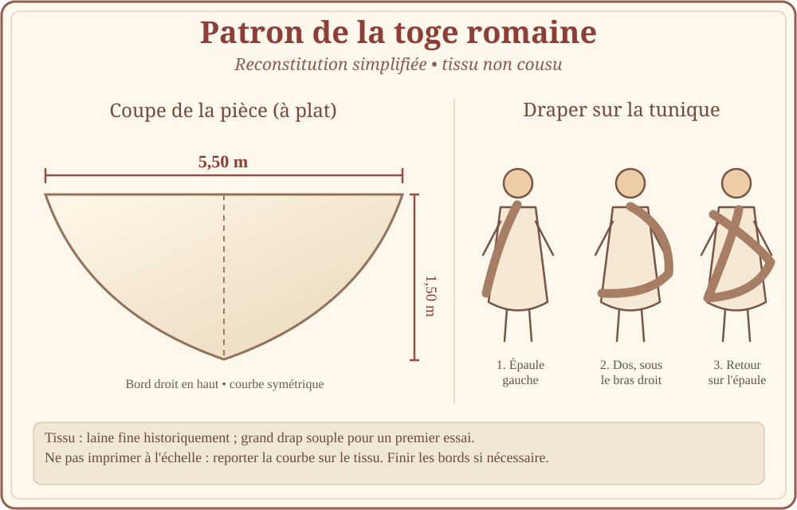
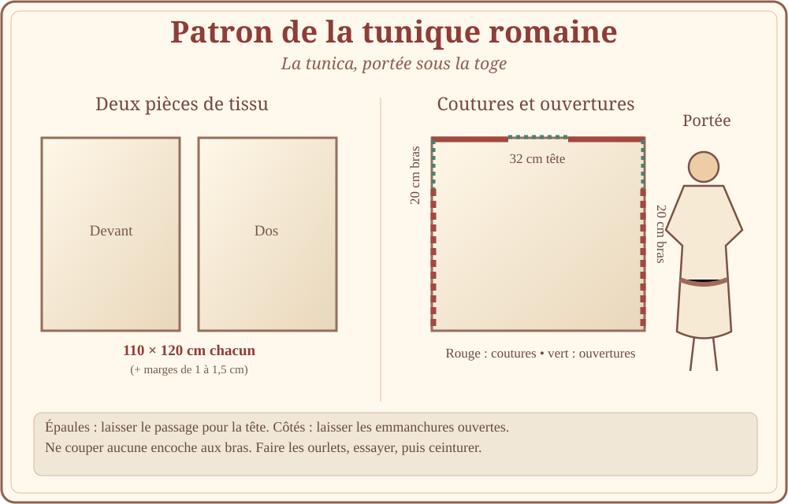

Deux reconstitutions simplifiées. Les schémas sont cotés, mais non à l’échelle 1:1 : reporter les mesures sur le tissu, ne pas imprimer ces dessins comme un gabarit grandeur nature.

Pour une toge : environ 5,50 m de tissu souple sur 1,50 m de hauteur maximale, ciseaux, craie et matériel de finition des bords. L'essai peut être réalisé avec un grand drap avant toute découpe.
La toge a évolué : cette coupe est un exercice pédagogique, pas une reproduction exacte d'un modèle de chaque période romaine.
Source : Royal Ontario Museum, « À toi de porter une toge ».

Pour une tunique : deux rectangles indicatifs de 110 × 120 cm chacun, plus marges de couture et d'ourlet (1 à 1,5 cm sur les côtés), fil assorti et cordon de taille. Adapter la largeur de coude à coude et la longueur à la personne.
Dimensions pour un adulte, à ajuster impérativement. Les tuniques historiques ont connu des coupes et des volumes variés.